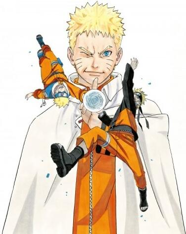

|  | 性别：男 | 配音：竹内顺子 |
| 别名：うずまきナルト | |
| 人物属性：天秤座 血型B 七代目火影 英雄 热血忍者 坚强 正义 蓝色眼睛叶 黄发 | |
| 人物外貌：金发蓝瞳，脸上有2边各有三道线，像猫的胡须。 | |
| 身份：未来的七代目火影 | |
| 人物介绍：
漩涡鸣人(うずまきナルト，声优：竹内顺子(日本);蒋笃慧(台湾);雷碧娜(香港)) 我向来都是有话直说，这就是我的忍道!(嘴遁) 鸣人日本漫画家岸本齐史作品《火影忍者》中男主角。四代目火影波风水门的儿子。母亲是第二代九尾人柱力漩涡玖辛奈。水门非常喜欢师傅自来也的小说《毅力忍传》，故选用小说中主角的名字“naruto”为他们的儿子命名。 鸣人出生时父母双亡，成为孤儿的鸣人在冷眼与孤寂中长大，但依然乐观向上，以火影为目标。在老师伊鲁卡以及三代目火影的鼓励下，鸣人下定决心要让所有人都认同他。 查克拉属性为风，擅长忍术为螺旋丸和色诱术。体内封印着九尾妖狐九喇嘛。开始拥有不可控的九尾之力，后和九尾成为好朋友。 最后成为七代目火影，娶日向雏田为妻，并育有一子一女。 在火影忍者这部动漫中，当时鸣人的身世是被三代火影给隐藏了。而鸣人的父亲是四代火影波风水门，母亲是漩涡玖辛奈。当时就有粉丝提出来了，为什么鸣人没有跟父亲叫波风鸣人呢?应该是被刻意隐藏了身份背景吧。一方面最早不告诉鸣人他的父亲是谁，另一方面，感觉也是为了保护鸣人。而且漩涡一族，和木叶的关系一直以来都很好，再加上水门这么爱她媳妇儿让跟他媳妇儿姓也应该啊! |
|
| 人物点评： 在从忍者学校毕业之前，鸣人是个一直想要得到别人认同的孩子。因此，他会在村内大搞恶作剧。他的恶作剧甚至严重到在木叶村的火影颜岩(以现实世界的拉什莫尔山为原型，雕刻着历代火影头像的一块大岩壁)上涂鸦。他向每一位质疑他的人说，总有一天他会登上木叶村第一忍者--火影的位置。他告诉伊鲁卡(也可说是所有人)，他要当上火影(因为他希望周围的人都能认同自己)。鸣人毕业了以后，也还是一直渴望得到人们的认同;是旗木卡卡西口中“意外性第一的忍者”。 鸣人初期喜欢同队的春野樱，然而小樱在乎著被鸣人视为竞争对手的宇智波佐助，与此同时他亦受到日向家的长女日向雏田的关注。中忍考试时，心情沮丧的鸣人，在训练场遇到雏田，后来鸣人受到雏田开导后，鸣人对雏田说出“像你这种人，我是很喜欢的。”，之后就参加下一场考试。原本鸣人和佐助是既相互竞争、又相互扶持的伙伴，直至佐助经历和我爱罗的决战，为了追求力量决意离开木叶，而春野樱一生一世的的请求拜托鸣人带回佐助，但鸣人没能阻止佐助离去而感到自责。直到身为同门师兄的晓成员 佩恩进攻木叶后，鸣人才亲耳听见雏田的告白，在历经四次忍界大战后，《THE LAST》中，鸣人查觉到对雏田的情感，而成为相互勉励彼此的伴侣。 在第367话自来也跟纲手的对话中，得知鸣人就是四代火影波风水门之子，因为身为四代火影师父的自来也，也指出这点，而且他也说看见鸣人就像看见自己的孙子。另外鸣人的母亲也确定为来自漩涡之国的女忍者漩涡玖辛奈。在漫画第498话中，鸣人的母亲从对话中指出鸣人的发色似其父亲，但个性跟忍术却像母亲(应是指擅长忍术的类型);连姓氏也是从母姓，似乎有隐瞒其为四代儿子之实。而鸣人这名字，取自自来也小说中主人公的名字[7]。动画中表明此部小说为《坚强毅力忍传》。 另外，在第370话中，可知四代火影封印九尾时，特意把九尾之力分成阴阳两半，并只把其中阳性查克拉封印在自己儿子身上，然后由自己来承受九尾阴性的查克拉。自来也认为四代此举有特殊目的，必然察觉有什么重大事情将要发生。(暂时以晓的动向，可能四代早已料到把九尾分开两部分，便能防止敌人能完全得到九尾)在第439话中，鸣人准备进入第九条尾的阶段时，第四代火影突现出现在鸣人的意识中(此时鸣人己被九尾游说，打算解开九尾的封印)，表示和长大成人的儿子相会是十分高兴。进一步确认鸣人是第四代的儿子，(详情请参阅火影忍者漫画第440话)，并协助鸣人控制九尾的力量。其后他与八尾的人柱力在一个小岛修行。要控制九尾，必须用查克拉。八尾帮助他在意识，用自身查克拉扑捉九尾查克拉。正当九尾进行反控制时，鸣人母亲的力量出现。玖辛奈的查克拉帮鸣人控制住了九尾，并将他的过去，以及鸣人为何会成为九尾人柱力的原委一一道来，使鸣人不再心存疑惑，在心理上，也有更大的力量应付第四次忍界大战。 与佐助、小樱在第四次忍界大战中被称为新的三忍。 |
|
| “你终于做到了，七代目火影鸣人！” | |
| 返回上一级 | |